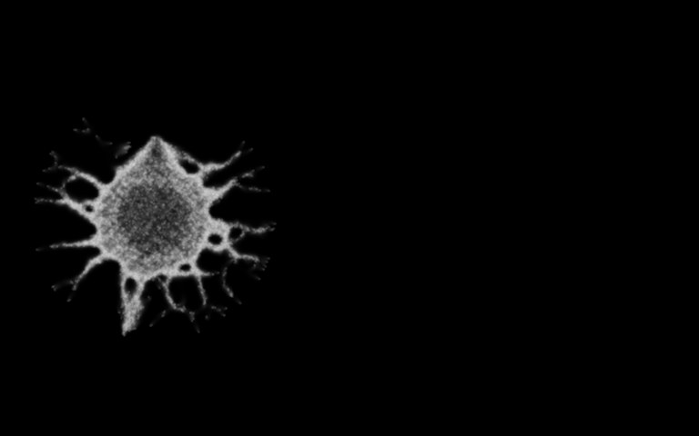
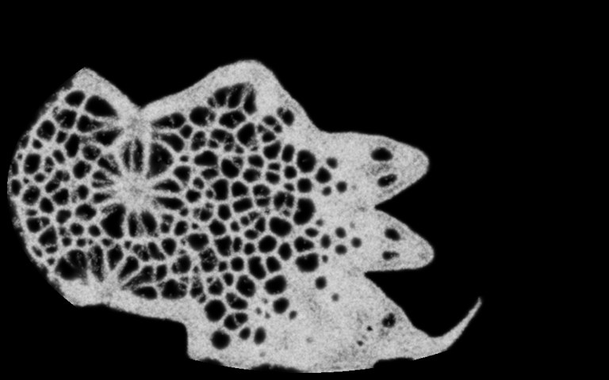
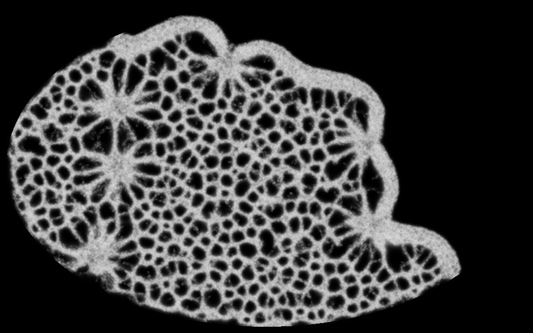
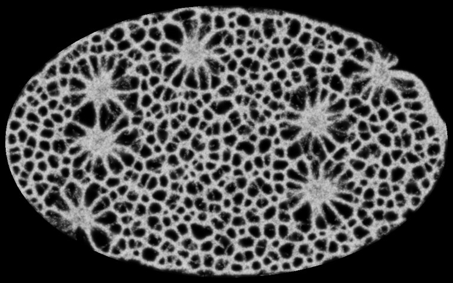
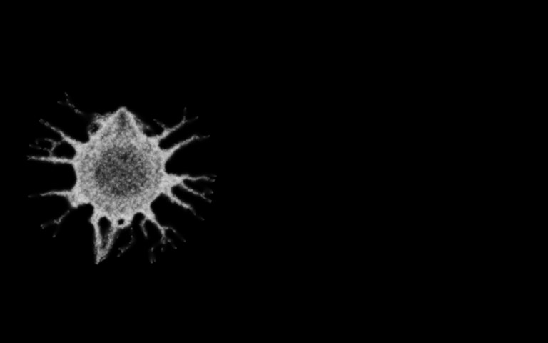
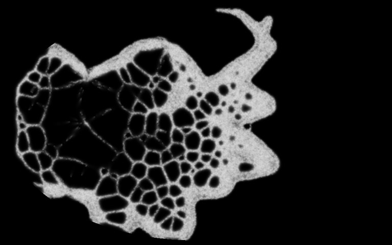
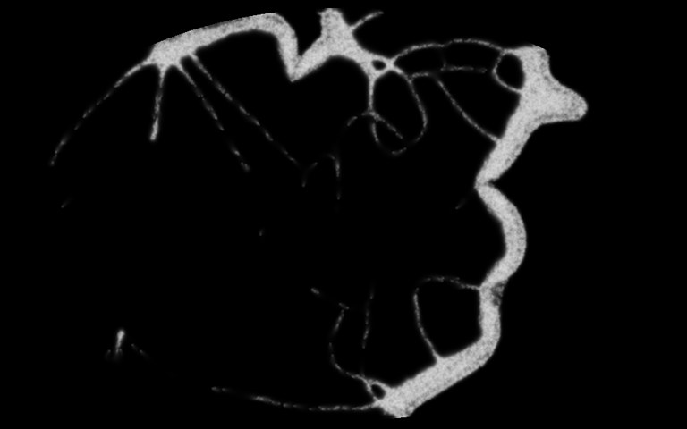
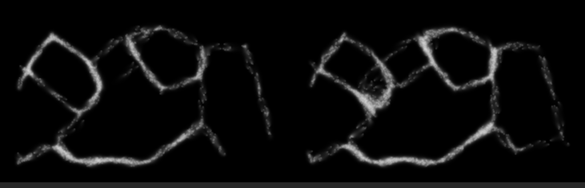

The big dish's walker count used to be fixed. Now each walker eats, pays upkeep, divides when it has eaten enough and dies when it has gone hungry too long. Fed, the mould grows from 10,000 walkers to about 96,000 in 30 seconds. Starved, it grows on the food it is standing on and then dies down to almost nothing.
Everything below is the simulation: brightness is the trail the walkers lay, and nothing is drawn on top. The rule is off unless a dish turns it on, so every existing dish is unchanged.
Seed 1. Both dishes start the same: 10,000 walkers in a blob on the 1024 × 640 dish, with grass on every cell. In the fed dish the grass grows back (0.002 a step); in the starved dish it does not. Videos play at twice speed.







The deciding measure was named before the runs: living walkers at 30 s, fed against starved on the same seed. A fed mould should end above its 10,000 start and a starved one below it.
| Seed | Fed, alive at 30 s | Fed, grass left | Starved, alive at 30 s | Starved, grass left | Starved, alive at 5 s |
|---|---|---|---|---|---|
| 1 | 96,127 | 0.128 | 32 | 0.001 | 66,757 |
| 2 | 96,903 | 0.123 | 3 | 0.001 | 44,535 |
| 3 | 96,034 | 0.152 | 9 | 0.001 | 51,866 |
| 4 | 96,909 | 0.123 | 9,420 | 0.028 | 28,420 |
| 5 | 92,641 | 0.197 | 823 | 0.002 | 55,707 |
| 6 | 96,588 | 0.137 | 7,481 | 0.009 | 47,418 |
| 7 | 96,689 | 0.124 | 0 | 0.001 | 45,698 |
| 8 | 95,566 | 0.153 | 6,904 | 0.020 | 59,870 |
| All 8 | median 96,358 | median 428 |
Fed beat starved on 8 of 8 seeds (sign test p 0.0078). Every fed mould ended above its start and every starved one below it. The fed dishes stop near their 100,000 slots with grass still left, so the slots, not the food, cap them. The three starved dishes still above 6,000 at 30 s had some grass left and were still falling.
Second measure: living walkers at 60 s on a half-size dish (512 × 320, 2,500 walkers to start, 50,000 slots, never full) with the grass regrowing at three rates.
| Grass regrowth a step | Alive at 60 s, median (range) | Against the rate below it |
|---|---|---|
| 0.0005 | 7,113 (6,991-7,707) | |
| 0.001 | 13,522 (13,004-13,841) | more on 8 of 8, p 0.0078; 1.90× |
| 0.002 | 25,029 (24,248-25,284) | more on 8 of 8, p 0.0078; 1.87× |
Doubling the food nearly doubles the mould. These dishes settle by about 15 s and hold there. They also turn over fast: at the top rate about 8,700 walkers are born and about as many starve each second against 25,000 alive, so a walker lives about 3 seconds. All three comparisons survive the Holm correction.
The GPU runs the same rule as three short passes after the walkers move, one thread a slot. A test in CI takes a dish from the CPU, runs one tick on the GPU and compares every walker, every cell's count, the trail, the scent and the grass. It matches to the bit on five of seven dishes; on the other two the only gap is floats added in a different order. Twenty bugs planted in the GPU code one at a time, from a death that keeps its cell to a child that keeps a dead walker's sickness, all fail the test.
In the GPU sandbox it is the fifth panel page, GROWTH, with a fed mould on Ctrl+3 and a starving one on Ctrl+4. With growth on, the bottom line counts the walkers alive. To try it on Scott-Desktop, run this in the Slime Mold folder once the change is merged:
On the CPU with 100,000 walkers on one thread, growth adds nothing measurable: 26.80-28.35 ms a tick with it on against 27.30-27.67 off, three rounds each. On the GTX 1070 it adds 0.16 ms to a 1.82 ms frame at 100,000 walkers (1.99 against 1.82 ms of GPU time for two ticks, three rounds each). The fed mould growing from 10,000 to 96,000 walkers runs at 1.79 ms a frame.
One seed, on the Larder thread's world: 512 × 320 with 23 crystals that the walkers eat, and no grass. 5,000 walkers to start.
